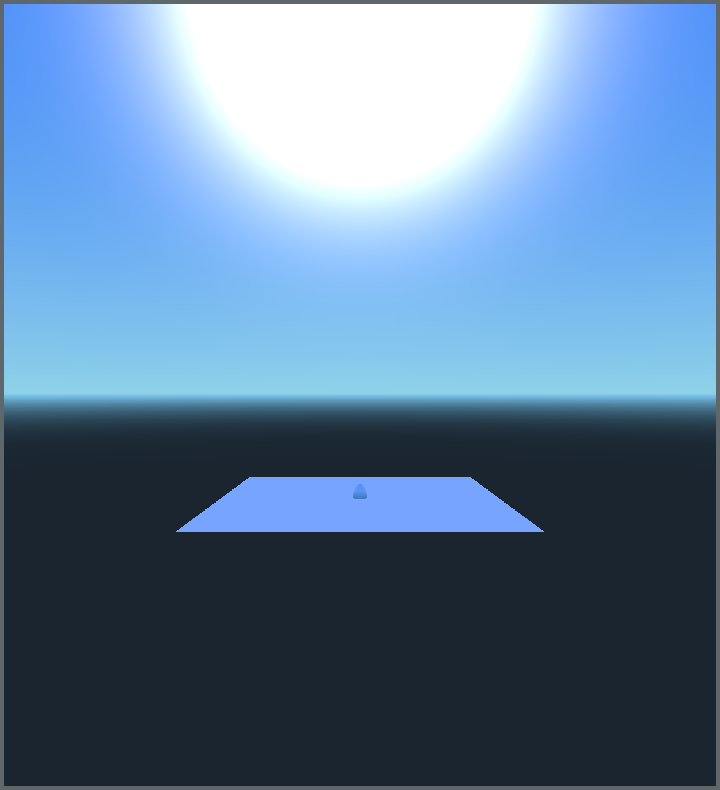
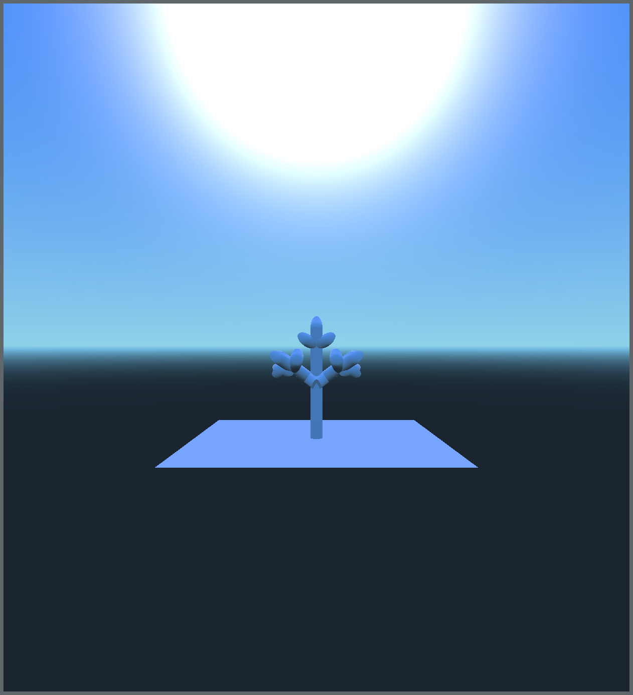
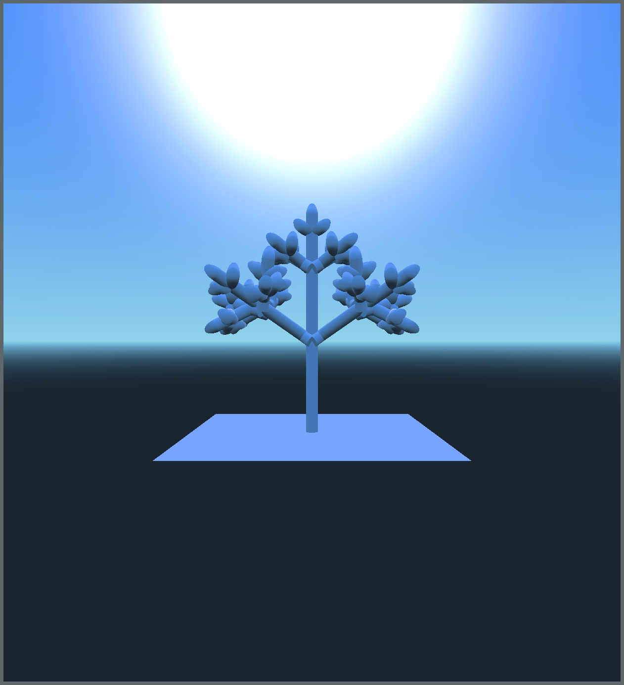
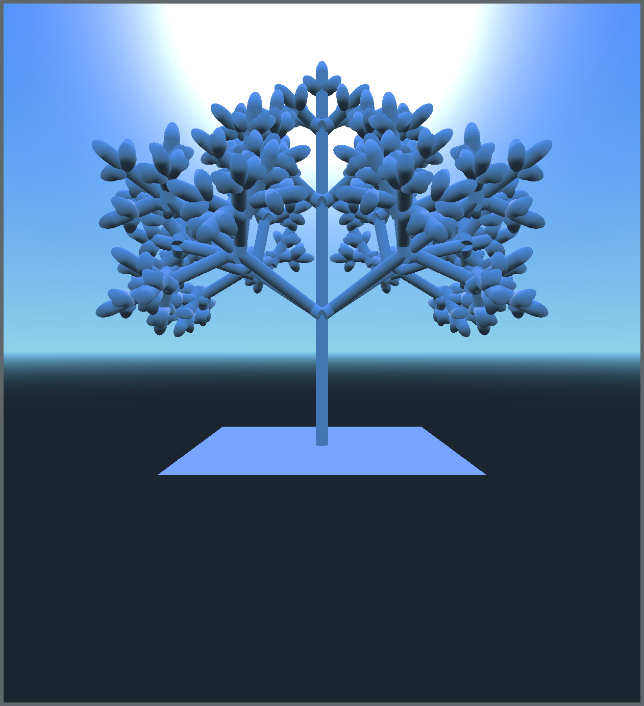
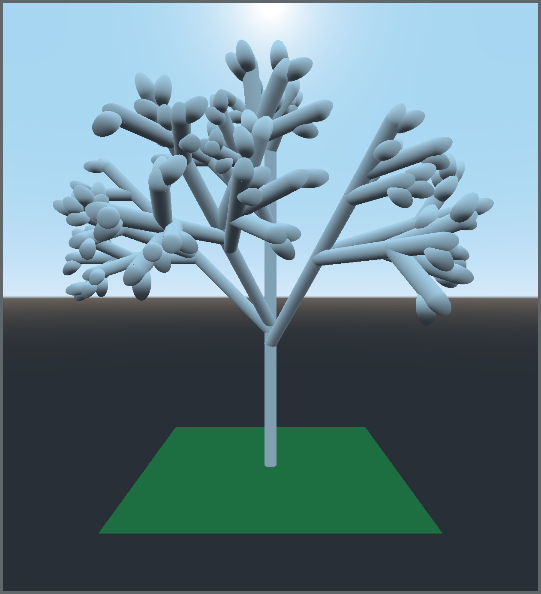

Project by Pravin Visakan, ID: 504825910
Real plants exist as physical entities in a physical world, and the interaction between the two can affect overall plant structure. This project explores the use of physics simulation to produce phy sically-influenced structures. In the course of doing so, a variant of the L-System formalism is de veloped. This more object-oriented plant model leverages common programming constructs and compatib ility with common game engine architectures.
   
Above: The first 5 growth steps of an L-System.

Above: An L-System plant with randomized branch culling and placement.
If your browser doesn't support embedded video, here's a link.
A link to the full report.
A link to the slides.